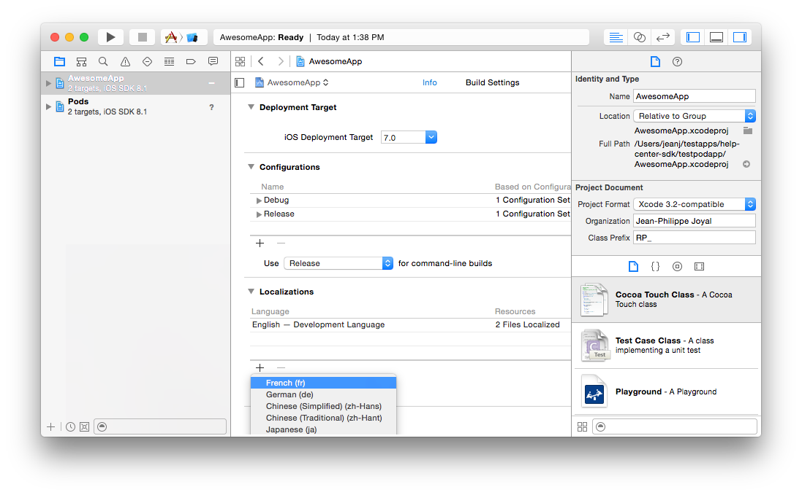
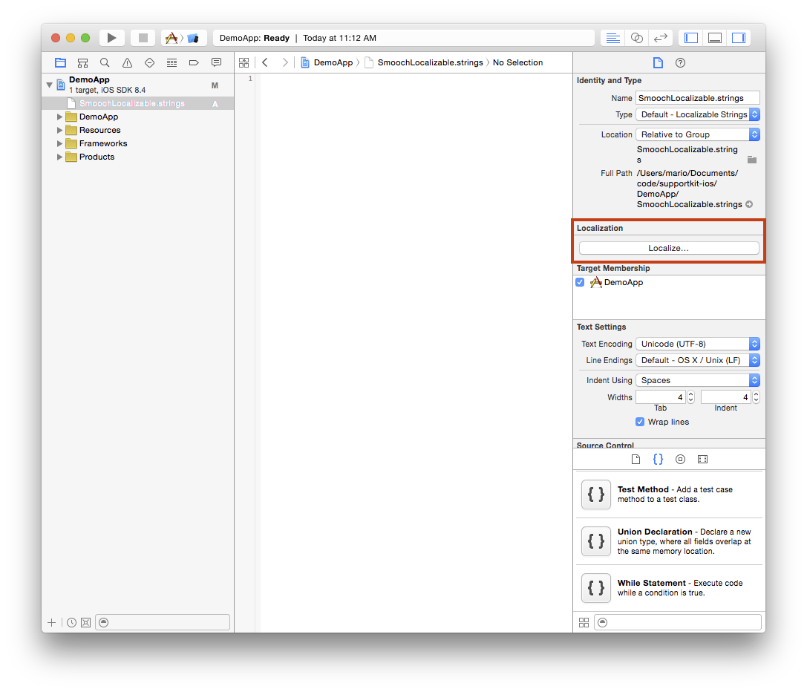

Welcome
SupportKit adds beautifully simple messaging to your app to keep your users engaged and coming back. If you want to learn more about SupportKit, then visit our website at http://www.supportkit.io or sign up here. This page provides in-depth documentation on SupportKit’s features and is meant to be a guide for developers integrating the SDK and app makers seeking to engage with their users.
Source code examples are provided for all of our SDKs, including both Objective-C and Swift for iOS. You can view code examples inline, and you can switch the programming language of the examples with the tabs in the top left.
For more in-depth details on SupportKit’s api check out our API reference. The API reference documents every method and property available through SupportKit. If you have any other questions, feel free to reach out to us here.
Adding SupportKit to your app
There are two ways to install the SupportKit SDK. The recommended and easier way makes use of CocoaPods to manage library dependencies and SDK updates. Alternatively, you can go the manual route and drop the SDK into your Xcode project.
We’ve documented both methods for adding SupportKit to your app. Read on and follow your preferred way of adding the SDK to your project.
CocoaPods Method
First, install Cocoapods if it isn’t already available on your system:
sudo gem install cocoapods
Now that you’ve installed CocoaPods, we’ll add SupportKit to your project’s dependencies. Run these commands in terminal from the directory that houses your .xcodeproj file
$ echo "pod 'SupportKit'" >> Podfile
$ pod install
Open the .xcworkspace file and add the necessary code to initialize SupportKit in your app.
Manual Method
First, grab a copy of SupportKit by downloading the most recent release or visiting our GitHub page.
Next, add the SDK to your XCode project by dragging both SupportKit.framework and SupportKit.bundle into your project as shown below.

Now you’ll have to add SupportKit’s dependencies to your project if they’re not already linked in. Go to “Build phases” in your project’s target and select “Link Binary With Libraries”:
- CoreGraphics.framework
- CoreTelephony.framework
- CoreText.framework
- Foundation.framework
- libxml2.dylib
- OpenGLES.framework
- QuartzCore.framework
- SystemConfiguration.framework
- UIKit.framework
- AssetsLibrary.framework
- Photos.framework
- AVFoundation.framework
SupportKit should now be available to your app and you’re ready to add the necessary code to initialize SupportKit in your app.
Import the SupportKit header file
Import the SupportKit file into the your app delegate’s .m file and any other places you plan to use it.
#import <SupportKit/SupportKit.h>
#import <SupportKit/SupportKit.h>
Initialize SupportKit in your app
After following the steps above, your app is setup for working with the SupportKit SDK. Before your code can invoke its functionality, you’ll have to initialize the library using your app’s token.
This token is free and uniquely identifies your app and links it to the SupportKit backend that does the heavy lifting necessary to bridge the gap between you and your users.
You can find your token by logging into SupportKit and copying it from the settings page as shown below.

Once you’ve located your token, use the code below to initialize SupportKit.
Add the following line of code to your applicationDidFinishLaunchingWithOptions: method
[SupportKit initWithSettings:[SKTSettings settingsWithAppToken:@"YOUR_APP_TOKEN"]];
SupportKit.initWithSettings(SKTSettings(appToken: "YOUR_APP_TOKEN"))
Make sure to replace YOUR_APP_TOKEN with your app token.
Displaying the SupportKit User Interface
Once you’ve initialized SupportKit, you’re ready to try it out.
Find a suitable place in your app’s interface to invoke SupportKit and use the code below to display the SupportKit user interface. You can bring up SupportKit whenever you think that your user will need access to help or a communication channel to contact you.
[SupportKit show];
SupportKit.show()
Updating SupportKit
CocoaPods
To update via cocoapods, simply execute this
$ pod update
Manual
To manually update SupportKit simply grab a fresh copy of SupportKit by downloading the most recent release and re-add the SDK to your XCode project by dragging both SupportKit.framework and SupportKit.bundle into your project
Configuring push notifications
Push notifications are a great, unobtrusive way to let your users know that a reply to their message has arrived.
Step 1. Enable Push Notifications and Generate the .p12 Certificate
Log into the Identifiers section of the Apple Developer Member Center, and select your app. You can get there by visiting this link
Click ‘Edit’, enable ‘Push Notifications’, and then click ‘Create Certificate…“
Follow the instructions to generate a certificate signing request using Keychain Access
Once the certificate is ready, download it to your computer and double-click it to open it in Keychain Access
Right click on the certificate you created, and select 'Export "Apple Development IOS Push Services:…”’
Save the .p12 file to your computer. Do NOT set a password on the file, just press OK.
Step 2. Upload the .p12 file to SupportKit
Go to http://app.supportkit.io and log into your account.
Select the app you want push notifications to enabled for.
Upload the .p12 file.
Step 3. Re-create your Provisioning Profile
Now that you have enabled push notifications for your app, you MUST re-create your Provisioning Profile. You can not use the one you’ve used in the past.
Go to Provisioning Profiles in the Apple Developer Member Center by clicking here.
Click the ‘+’ button to add a new provisioning profile and follow the on-screen instructions.
Notice that once you created the new provisioning profile, it shows that “Push Notifications” is an enabled service. Download the new profile.
Double click it to install it. It should now be selectable in Xcode for your app.
Build your app.
Step 4. Test it out!
Kill and restart your app.
Launch SupportKit.
Send a message. Important! You must resend a message after uploading the p12 file.
Reply to the message from your email inbox
You’ll receive a notification if you’re in the app, or outside the app!
Step 5. Repeat for Production mode
Take note that there are “Development” and “Production” certificates and profiles. Make sure that you upload the “Production” .p12 file to SupportKit when you’re ready to release your build through ad-hoc, enterprise or app store distribution.
Conversations
SupportKit allows your users to have conversations with you through an interface that’s as easy and intuitive as text messaging. The messages users send from your app arrive to you either as a Slack message or as a thread in your e-mail inbox so that you can manage them using your favourite web, desktop or mobile client. If you choose to send messages to an e-mail inbox, you can send them to your favourite CRM as well.
How do conversations work?
When users access SupportKit by tapping on an element of your app’s interface or using the two-finger gesture, they’ll be presented with SupportKit’s messaging interface.

Slack Channel
Once your user types a message and hits send, SupportKit sends the message to Slack. If it’s a new conversation, a notification will appear in the dispatch channel that you chose when you configured Slack.
This notification contains a link to a channel associated to the specific user that sent you the message. From this channel you can get more information on the user and reply to their questions.
The messages you send in this channel are not automatically sent to your user. We do this so that you can invite teammates to read and collaborate on the user’s issue, without exposing your internal conversation.
When you’re ready to send a message to the user, simply use SupportKit’s slash command:
/sk TYPE YOUR MESSAGE HERE
This command will make SupportKit send your message directly to the app user. You’ll get a notification in the channel confirming that the transmission was successful.
If you want to consult any metadata you’ve associated with the user in order to aid the help process, simply use the command below to instruct SupportKit to display the most up to date metadata on a user.
/sk !profile
To learn more about how to associate data to a user, read our documentation on the subject.
E-Mail Channel
Once your user types a message and hits send, SupportKit transforms the message into an e-mail that makes its way to the e-mail address you specified when signing up for SupportKit. This e-mail contains the user’s message as well as any metadata about the user that you’ve captured in your app.

Identifying your users
SupportKit allows you to associate metadata to your users so that you can better understand the context around a user’s message.
Naming the current user
By default, e-mail from SupportKit will be sent from a sender named Anonymous. SupportKit lets you easilly identify who you are speaking with.
You can set the sender’s name by calling the method below. Once you set the user’s name, it will be persisted by SupportKit so any future message from this user will be named with the input you provided. If the user changes, simply call the method above a second time and the new information will overwrite it.
[SKTUser currentUser].firstName = @"Doctor";
[SKTUser currentUser].lastName = @"Who";
SKTUser.currentUser().firstName = "Doctor"
SKTUser.currentUser().lastName = "Who"
Getting the avatar of the current user
Setting the user’s e-mail lets you see their gravatar in the e-mail conversation. The user will not see their own gravatar in the chat.
[SKTUser currentUser].email = @"bob@example.com";
SKTUser.currentUser().email = "bob@example.com"
Setting the signed up date
Setting the user’s signed up date allows Whispers based on that date to be sent to the right people. If not set, we’ll default to the first time SupportKit sees the user. Its best to set it yourself to avoid sending a welcome message to users that in fact signed up a long while ago.
[SKTUser currentUser].signedUpAt = [NSDate date];
SKTUser.currentUser().signedUpAt = NSDate()
Adding any other kind of metadata
The SKTUser class also allows you to add any other kind of metadata that will be sent along when users contact you. You can also use any metadata you store using this API to send targeted messages to your users proactively using our Whispers feature. The addProperties: method accepts an NSDictionary containing the metadata to add.
This dictionary must have keys that are NSString and values that are either NSString, NSNumber or NSDate. If your dictionary contains any other data type as a value, then description will be called on the object and the resulting NSString will be added as a property.
[[SKTUser currentUser] addProperties:@{ @"nickname" : @"Lil Big Daddy Slim", @"weight" : @650, @"premiumUser" : @YES }];
SKTUser.currentUser().addProperties([ "nickname" : "Lil Big Daddy Slim", "weight" : 650, "premiumUser" : true ])
When you reply to e-mail messages sent through SupportKit, your e-mail reply is transformed into an in-app message. If you’ve enabled push notifications, a notification will be displayed on your user’s device, even if they are not currently using your app. If you haven’t enabled push notifications, or your user opted out of them, an in-app notification will be displayed when they are using your app.
Styling the Conversation Interface
The style of the conversation user interface can be controlled through two techniques:
- Using the
UIAppearanceproxy ofUINavigationBarto style the navigation bar’s color and appearance. - The
SKTSettingsclass provides access to the status bar and the color of the message bubbles.
Suppose you wanted the conversation UI to have a black navigation bar and red message bubbles. First, you’d use UINavigationBar’s appearance proxy to set up the navigation bar. Then, you’d use SKTSettings to finish styling the UI:
SKTSettings* settings = [SKTSettings settingsWithAppToken:@"YOURAPP_TOKEN"];
settings.conversationAccentColor = [UIColor redColor];
settings.conversationStatusBarStyle = UIStatusBarStyleLightContent;
[[UINavigationBar appearance] setBarTintColor:[UIColor blackColor]];
[[UINavigationBar appearance] setTintColor:[UIColor redColor]];
[[UINavigationBar appearance] setTitleTextAttributes:@{ NSForegroundColorAttributeName : [UIColor redColor] }];
var settings = SKTSettings(appToken: "YOUR_APP_TOKEN")
settings.conversationAccentColor = UIColor.redColor();
settings.conversationStatusBarStyle = UIStatusBarStyle.LightContent;
UINavigationBar.appearance().barTintColor = UIColor.blackColor()
UINavigationBar.appearance().tintColor = UIColor.redColor()
UINavigationBar.appearance().titleTextAttributes = [ NSForegroundColorAttributeName : UIColor.redColor()]
Getting help from your team
If you want multiple team members to respond to your SupportKit requests, you can specify multiple email addresses, or use a mailing list. Whenever a team member replies, the incoming email address and associated name will be used to determine the team member displayed to the user alongside the message.

Keeping your users safe
SupportKit sends messages using standard encryption protocols, but in order to keep your users completely safe, the best way is to inform your users they should never send sensitive data through SupportKit messages, for example: credit card numbers, passwords, sensitive documents, and private photos.
Getting conversations started
SupportKit allows you to reach out to your users at scale so that you can start conversations with them about anything that matters to your app, even if they aren’t in need of service or support. We call this feature “Whispers” and it allows you to automatically send a message to a targeted group of users at exactly the right time.
To help get you started, we’ve built in 3 basic templates and also allow you to create your own using any custom metadata that you’re capturing with the SupportKit User API.
Welcome Whisper : Welcome new users to your app by starting a conversation where you can answer pressing questions and get initial feedback.
Re-Engage Users : Send a message to users who were last seen using the app at least 7 days ago.
Announcement : Send a message to all users when they launch the app.
You can start from any of these templates and customize it to meet your needs. You can also create a custom Whisper from scratch and go beyond these templates. You can use Whispers to ask for reviews from your most engaged users at the right time, you can notify users of older versions of your app about new versions, and more.
How do Whispers work
You create Whispers from within the SupportKit dashboard by specifying which users should receive your message, the message you’d like to send to your users and the event that should trigger delivery of this message. For example, to create a Whisper that would check in to see how users are doing 2 days after installing an app, you’d create a custom Whisper with these settings:

Targeting a group of users
You can target your users based on any information that you’ve stored using the SupportKit User API. We also provide several built-in properties that you can use without instrumenting your app with calls to SupportKit User class.
All users : Send the Whisper to everyone that has your app. Whispers that target everyone must be linked to an event.
Signed Up : Send the message before/after a specified number of days. For example, you can use this to send a message to all users who’ve been using your app for less than a day or more than a week. See here for more information.
Last Seen : Send the message based on when the user last interacted with your app. This value is updated automatically each time a user launches your app.
App Version : Send the message to users who are using (or not using) a specific version of your app. The value for this property is taken from the CFBundleVersion key in your app’s info.plist file, and is updated each time the user launches your app.
In order to create Whispers based on properties you’ve defined using the SupportKit User class, you’ll need to run your app and ensure that at least 1 of your users was tagged with the property you want to base your Whisper on. For more information on using custom properties, read our documentation on the subject.
Personalizing the message text
You can personalize the message that’s being sent with the first or last name of the user. To do this, simply use the syntax {{firstName || fallback }} when creating your message. If the user’s firstName hasn’t been set by your code through the SupportKit User class then the placeholder will be replaced with the string specified as fallback.
When are Whispers sent
Whispers can be sent either when a specified event occurs in your app or when a user’s profile information matches the criteria of the target group.
Whispers that are based on custom events defined by you in your app are tied to the execution of the SupportKit track: method. When track: is called, SupportKit will check to see if the associated Whisper has already been seen by this user. If it hasn’t, the Whisper will be immediately presented to the user through an in-app notification that leads to the messaging interface when tapped. When you create a Whisper, SupportKit will display a preview of this in-app notification.
SupportKit.track("item-in-cart");
SupportKit.track('item-in-cart');
[SupportKit track:@"user-on-promopage"];
SupportKit.track("user-on-promopage");
If the Whisper is not tied to an event, SupportKit will monitor your userbase for changes and dispatch Whispers when a user’s properties make them a fit for the target group of your Whisper. In many cases, this occurs when the user is not using your app. For instance, if you elect to send a Whisper to new users after 1 day has elapsed, SupportKit will deliver the message approximately 24 hours after the user first used your app. If you choose to use this powerful method of Whisper delivery, ensure that you’ve enabled push notifications for your app in SupportKit. With push enabled, your users will receive a message that will bring them back into the conversation, even if they’re not using your app.
Note that users need to be prompted and accept to receive push notifications. To make sure we don’t prompt the user at a bad moment, SupportKit will only request permission to send push notifications after a user sends his first message and only if the prompt wasn’t shown earlier by your app. To get the full power of Whispers, we recommend you prompt for push permission as early as possible.
Adding user actions to a Whisper
You can prompt your users to take actions by adding action buttons to your Whisper. Clicking on ‘Add an action’ will open up a new input box where you can specify the button text and what action to take when the user clicks on the button.

The Action input takes any URL, deeplink or app store link that is compatible with this format:
[[UIApplication sharedApplication] openURL:url]
You can find your app’s App Store ID by finding your app on Link Maker. The URL of your app’s page will have your App Store ID at the end. The link to use in the Action input will then be itms-apps://itunes.apple.com/app/id[yourAppIdHere]

Managing Whispers

Once you’ve created a Whisper you can manage it from within the SupportKit web interface. By clicking on the “Whispers” link in the navigation bar, you’ll be presented with a list of Whispers as well as the number of users who have been exposed to them while running your app.
You can pause Whispers at any time. When you do so, the Whisper will not be shown to any more users until you mark it as active by clicking “Resume”.
Recommending answers
Recommending content to your users is a great way to share important information, and solve users' problems before they have to tap the “Messages” button. SupportKit beautifully previews your recommendations, so users can easily browse and find the one they are looking for. Content can be from any URL including online videos like Youtube.

The SupportKit SDK provides two types of recommendations - a static default list of recommendations, and one dynamic top recommendation.
The default recommendations should showcase important information about your app (i.e. information that should apply to the majority of users). This list can include basic usage instructions for different areas of the app, unique or new features to show off, solutions to common problems, or anything else you would like to communicate to your users.
Use the setDefaultRecommendations: API to set these, for example:
[SupportKit setDefaultRecommendations:@[ @"https://www.somearticle.com/article", @"https://somevideotoshow.com" ]];
SupportKit.setDefaultRecommendations(["https://www.somearticle.com/article", "https://somevideotoshow.com"])
The top recommendation will appear at the beginning of the list and will be the first one the user sees upon launching SupportKit. This recommendation should attempt to solve a problem the user has just experienced so they don’t need to search for it. For example, if a user fails to log in, you may choose to recommend an article explaining the various types of login errors that can occur, and how to fix and/or work around them.
Use the setTopRecommendations: API to set these, for example:
[SupportKit setTopRecommendation:@"https://yourdomain.zendesk.com/hc/en-us/articles/000000000-context-driven-recommendation"];
SupportKit.setTopRecommendation("https://yourdomain.zendesk.com/hc/en-us/articles/000000000-context-driven-recommendation")
Recommending content to your users is a great way to increase engagement with your app and reduce user’s frustration by providing help before users even have the chance to ask for it.
Swipe gesture for help
Great support should be accessible to your users no matter where they are in your app, which is why we’ve designed a unique, yet simple gesture that allows users to get help in your app. Simply swipe down on the screen with two fingers, and your users will be gently led into SupportKit.
When enabled, the first time that your user enters SupportKit through a button tap or some other means, SupportKit will display a quick tip informing the user that support is always a two-finger swipe away. This helps users get access to help from anywhere in your app and helps them follow instructions you may provide them through help content or in a conversation.
This functionality is enabled by default. To learn more about how to control it, please visit our API reference

Localization
Every string you see in SupportKit can be customized and localized. SupportKit provides a few languages out of the box, but adding new languages is easy to do. When localizing strings, SupportKit looks for SupportKitLocalizable.strings in you app bundle first then in the SupportKit bundle, enabling you to customize any strings and add support for other languages.
Enabling Localization in your app
For SupportKit to display a language other than English, your app needs to first enable support for that language. You can enable a second language in your Xcode project settings:

Once you have this, SupportKit will display itself in the device language for the supported language. English, French, Spanish, Chinese traditional, Arabic, German, Persian, Japanese and Finnish are currently included. See how to support more languages in Adding more languages
Adding more languages
To enable other languages beside the provided ones, first copy the english SupportKitLocalizable.strings file from the SupportKit bundle to the corresponding .lproj folder for that language. Then, translate the values to match that language.
If you translate SupportKit’s strings to a language not currently supported, we encourage you to share it with us so that every SupportKit user can benefit from it. You can do so by forking our GitHub repo and creating a pull request, or just send us your string file at help@supportkit.io
Strings customization
SupportKit lets you customize any strings it displays via Apple’s localization mechanism. Simply add an empty string file named SupportKitLocalizable.strings in your Xcode project and specify new values for the keys present in the SupportKitLocalizable.strings available in the SupportKit bundle.
To enable string customization across languages, make sure you “Localize” your SupportKitLocalizable.strings file in Xcode.

Slack
Slack is a new communication tool that combines the best things about chat, email and the web to group all of your team’s conversations and workflow into one beautiful, searchable place.
SupportKit has a revolutionary new Slack integration that allows your team to effortlessly speak to your app’s users, without leaving Slack. Check out this video to see how it works:
Configuring Slack
Step 1. “Authorizify” SupportKit so that it can talk to your Slack
Step 2. Set up a new “slash command” so that you can send messages to SupportKit

Step 3. Choose a “dispatch channel” to receive new message notifications from your app’s users
Once you’ve completed these 3 steps, you’re ready to start speaking to your users with Slack. For more information on how to do this, read the conversations section
Help Scout
Help Scout is a scalable, elegant and intuitive help desk solution. By connecting SupportKit to Help Scout, you can manage in-app conversations you have with your users directly from Help Scout. This way, you can use the same system to handle your team’s e-mail and in-app support channels. Unlike other Help Scout conversations, agent replies in conversations initiated by SupportKit app users won’t be sent by email, instead they will appear directly in the app.
Configuring Help Scout to work with SupportKit
Configuring Help Scout is super easy. All you have to do is copy/paste a Help Scout API key into our integration page.
Log in to your Help Scout account, go to “Your Profile” -> “API Keys” and generate an API key.
On the Help Scout page in your SupportKit admin, paste the API key into the field that says “Paste API Key here.”
Now, pick the mailbox you want to recieve app user messages in, and next time one of your users messages you using SupportKit, the conversation will appear in the Help Scout mailbox.

Instant messaging from a Help Scout mailbox
You can change or delete the Help Scout mailbox that SupportKit sends messages to, but you should note that conversations will not automatically migrate to the new mailbox. You must move the conversations you wish to have in the new mailbox via the Help Scout UI. Otherwise they will continue in the previously configured mailbox. Update your settings before deleting a Help Scout mailbox. If the mailbox configured on SupportKit no longer exists, messages will be lost.
Zendesk
Zendesk is a CRM platform specialized in managing support tickets. Our Zendesk integration combines all the advantages of in-app messaging with a powerful CRM back-end.
Configuring Zendesk ticketing
Configuring SupportKit to communicate with Zendesk is easy. Go to your app settings on the SupportKit admin page, and in the Zendesk settings, enter your Zendesk subdomain and click on the authenticate button.

In order to maintain all your interactions with an app user under a single Zendesk End-user profile, it’s important to set the email of your user in your app’s SupportKit integration.
Configuring agent images
You can set an agent’s image in your app (as pictured below) by creating a Gravatar image associated with the agent’s email address.

Working with Zendesk email signatures
SupportKit automagically removes agent’s personal signatures from messages. Global signatures can be set, but must be prefixed with --, if they aren’t, you’ll see them appear in SK message bubbles, and it can be unsightly.

Optional additional information on Configuration
Once you are authenticated with your Zendesk app, SupportKit will automatically configure targets and triggers so that your Zendesk agents can communicate with your SupportKit app users.
During the configuration process any existing triggers in your Zendesk settings will be modified to not email the End-user if the ticket is tagged “supportkit”. We do this to avoid duplicating the conversation, and to remove any reason for the app user to leave your app to respond via email.
It’s suggested that you don’t modify the targets and triggers that SupportKit configures for you on Zendesk. However, if you do, and anything ever goes wrong, it’s easy to fix. Just return to your app settings on the SupportKit admin page and in the Zendesk settings click “Remove Integration.” Re-adding the integration will remove previously configured SupportKit targets and triggers and refresh your configuration.
Note: SupportKit only ever configures one target and trigger per a Zendesk subdomain. In the event that multiple apps, or even mutliple SupportKit accounts are authorized for a Zendesk subdomain, the triggers and targets will not be removed until all SupportKit apps have had the Zendesk integration removed.
Rate Limiting
Zendesk limits each account to 200 requests per a minute (globally). Additionally, they only allow 15 comments to be made on each individual ticket (regardless of whether the comment is an agent or app user) within a 10 minute period.
In the unlikely event that a conversation surpasses the rate limit, the agent will recieve a message in the Zendesk UI saying as much, and preventing the ticket from being updated for a certain period of time, usually around 6 minutes. Your app user’s messages will be queued up and sent after the time period specified by Zendesk.
To reduce the likelihood of you bumping up against the rate limit, SupportKit batches together all messages sent from the app user within a 5 second period into a single comment.
Configuring Zendesk knowledge base
SupportKit can also instantly embed your Zendesk Help Center in your app. This will give your users the ability to search your Zendesk knowledge base without leaving the app.

To show the Zendesk knowledge base search, call the init API in the SDK with your Zendesk Help Center URL:
SKTSettings* settings = [SKTSettings settingsWithAppToken:@"YOURAPPTOKEN"];
settings.knowledgeBaseURL = @"https://supportkit.zendesk.com"; //TODO: Replace with your own Zendesk URL
[SupportKit initWithSettings:settings];
var settings = SKTSettings(appToken: "YOUR_APP_TOKEN")
settings.knowledgeBaseURL = "https://supportkit.zendesk.com" //TODO: Replace with your own Zendesk URL
SupportKit.initWithSettings(settings)
When specifying your Zendesk URL, make sure to include the protocol (http:// or https://) that matches your Zendesk instance’s configuration.
Some Zendesk installations are shared between multiple apps. In such cases it’s necessary to filter SupportKit’s search results to only articles relevant to the specific app. The SupportKit filtering API provides a means to accomplish this, and allows filtering of search results based on categories, sections or forums (Zendesk knowledge bases are organized in three tiers: Category -> Section or Forum -> Article).
To find the id of a category, section or forum in Zendesk, simply navigate to the root of a given category/section/forum on your web portal, and copy the id contained in your browser’s address bar. The id will be a numerical value in the last path component of the URL.
In HelpCenter, look for the word ‘sections’ or ‘categories’ in the URL, as shown in the images below.


If you’re using an older version of Zendesk, look for the word ‘forums’ in the URL, as shown in the image below.

For example, to configure the SDK to only show articles under category ID 200033675:
SKTSettings* settings = [SKTSettings settingsWithAppToken:@"YOURAPPTOKEN"];
settings.knowledgeBaseURL = @"https://supportkit.zendesk.com";
[settings excludeSearchResultsIf:SKTSearchResultIsNotIn
categories:@[@200033675]
sections:nil];
var settings = SKTSettings(appToken: "YOUR_APP_TOKEN")
settings.knowledgeBaseURL = "https://supportkit.zendesk.com"
settings.excludeSearchResultsIf(SKTSearchResultsFilterMode.ResultIsNotIn, categories: [200033675], sections: nil)
Or, if instead you wanted to filter out all articles under section ID 200369774, your configuration would look like this:
[settings excludeSearchResultsIf:SKTSearchResultIsIn
categories:nil
sections:@[@200369774]];
settings.excludeSearchResultsIf(SKTSearchResultsFilterMode.ResultIsIn, categories: nil, sections: [200369774])
To configure filters using the older forum IDs, add forum IDs to the sections parameter like so:
[settings excludeSearchResultsIf:SKTSearchResultIsIn
categories:nil
sections:@[@200369774, @21931073]];
settings.excludeSearchResultsIf(SKTSearchResultsFilterMode.ResultIsIn, categories: nil, sections: [200369774, 21931073])
Connecting to your CRM
SupportKit’s been designed to fit into your existing workflow so you can focus on speaking to your users and take advantage of whatever medium makes you most effective.
In addition to deep integration with Zendesk, since SupportKit uses e-mail to manage its communication, it’s easy to use your favourite CRM to manage incoming conversations as tickets if you want to benefit from the additional tools this allows.
Take note of the e-mail address that the CRM uses to receive new support requests.
Set SupportKit’s forwarding address to the address you noted in step 1.
Turn off any kind of signatures or annotations in your CRM to ensure that users receive a concise chat bubble when you reply.